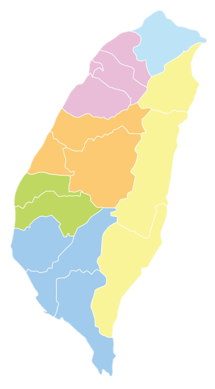

公司簡介
關於商淂
成立於2004年一月的商淂是由一群資深的市場研究夥伴基於“不必最大, 但要最好”的共同理念真心誠意而建立的
同仁為經驗豐富的專業市調管理者，研究範圍遍及全省，於台北、台中、高雄皆設有據點，提供全方位的市場研究服務，以協助客戶制定成功的行銷策略。我們以堅持優越的市調品質、深入對本地市場的深入瞭解，為客戶提供精闢的市場透視及協助客戶制定成功的市場策略。
商淂的文化及信念
- 保持客戶的業務機密是最基本的倫理
- 我們重視的是和客戶維持常常久久的良好關係而非一時的利益
- 持續進行的業務比突然的一個大案子更有價值
- 當客戶的夥伴，和客戶一起成長
商淂團隊
黃志鵬 Paul
研究部總監
25年的市場研究/市場調查經驗
學歷
- 陽明大學 公共衛生研究所碩士
經歷
- 現任：
- 商淂行銷顧問有限公司 研究部總監
- 曾任：
- 樂詣科技顧問公司 執行長
- 澄意文創公司 營運長
- 瑪麗蓮國際實業公司 副總經理
- 尼爾森行銷研究顧問公司 研究副總監
專長
嫻熟各種調研方法，數據溝通，洞察用戶需求，顧客經營，制定品牌策略，幫助各產業客戶解決在市場上所面臨的議題。超過25年豐富的市場調研及品牌經 驗，是消費者行為研究及品牌經營的專業顧問。
王政裕 Frank
研究部總監
23年的市場研究/市場調查經驗
學歷
- 國立台灣大學 會計系 學士
- 國立台北大學統計系所 碩士
經歷
- 現任：
- 商淂行銷顧問有限公司 研究部總監
- 曾任：
- RI市場研究公司資深研究員
- 易普所市場研究公司資深研究員
- 味全食品公司市調組副理
- 仁寶電子專案經理
專長
嫻熟各種調研方法，數據溝通，洞察用戶需求，顧客經營，制定品牌策略，幫助各產業客戶解決在市場上所面臨的議題。超過23年豐富的市場調研及品牌經 驗，是消費者行為研究及品牌經營的專業顧問。
龔珊珊 ShanShan
研究部總監
23年的市場研究/市場調查經驗
學歷
- 台灣清華大學統計研究所碩士
經歷
- 現任：
- 商淂行銷顧問有限公司 研究部總監
- 曾任：
- RI 市場研究公司 中國 研究部總監
- TNS市場研究公司 台灣 研究部副總監
專長
在定性和定量累積了多年的研究經驗，是一位經驗豐富的主持人。執行過的專案有品牌資產及延伸、廣告及媒體溝通測試、產品概念與定位、産品研發設計、品牌及廣告測試、二岸三地的生活形態等。目前服務的產業有快速消費品、汽車、金融、IT、3C商品、女性用品、處方醫藥、OTC產品、電信商品、電競遊戲相關、保健商品、家居商品… 等。
陳聖叡 Anlica
市調部總監
25年的市場研究/市場調查經驗
學歷
- 國立台北大學企管系所 碩士
經歷
- 現任：
- 商淂行銷顧問有限公司 市調部總監
- 曾任：
- 台灣智商市場研究顧問有限公司副總經理
- 偉立市場研究顧問有限公司執行總監
- 尼爾森市場研究公司市調部主任
專長
市調品質管理及人員培訓

CLT Interviewers
- 全省125位Part-time
- 北部 60位
- 中部 30位
- 南部 35位
- 可同時執行8個點的街訪
Outdoor Interviewers
- 全省約100位Part-time
- 北部 50位
- 中部 20位
- 南部 30位
Part time supervisors
全省 10位 可支援個案執行